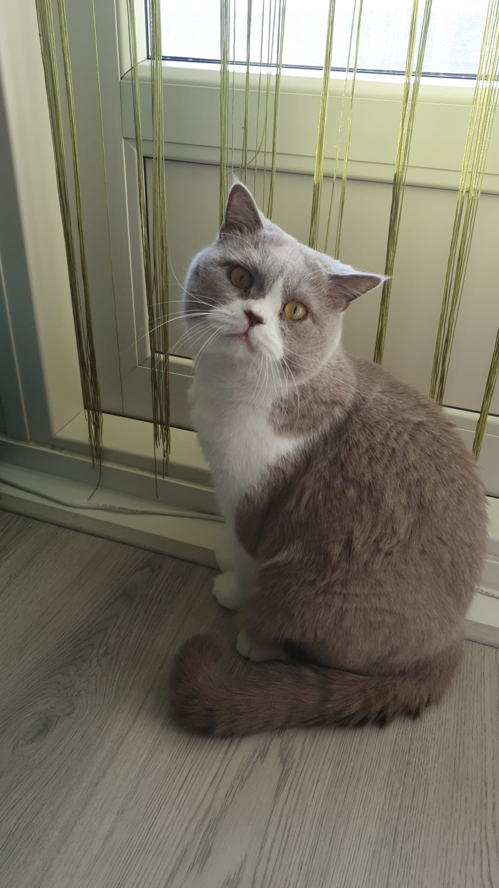

Over mij
Ik ben Javier en ik ben 18 jaar oud. Mijn achternaam is Sanchez Ramirez. Ik woon bij mijn moeder in Sittard.
We zijn een gezin van twee. Ik heb een kat als huisdier. De naam van mijn kat is Wilik.
Hobby's
Mijn voornaamste hobby is gamen. Ik speel spellen zoals : dead by daylight, fivem, rocket league, z1 battle royale (h1z1) en simulator games.
Familie
Mijn vader en broertje wonen in de buurt van mij. De meeste familie leden wonen in het buitenland.
Ik heb heel weinig familie in Nederland. De enigste familie leden in Nederland zijn mijn oma en oom.
In België woont mijn Tante, nicht en neef. In spanje en Tsjechië heb ik de meeste familie leden.
Ik heb daar af en toe contact mee.
